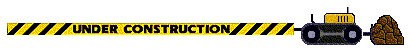

Very Good Goat, extremely fluffy would pet

Marvellous goat, I would maintain a respectable distance and admire their beauty from afar
Goats can be wild or domesticated:-
Goat can refer to Capra the wild goat.
Goat can refer to Capra aegagrus hircus the domestic goat.
They're all good goats